library(tidyverse)
library(ggplot2)
library(metafor)
library(car)
library(ggthemes)
library(cowplot)
library(dplyr)
library(readxl)
library(lme4)
library(lmerTest)
library(report)
library(patchwork)
library(merTools)
library(ciTools)
library(parameters)
library(performance)
library(see)
library(psych)
library(MetBrewer)Modeling disease-yield relationship in wheat blast
Loading Packages
Data Importing
data_seve_yld <- read_excel("Data/data_index_yield.xlsx")
data_epamig<- read_excel("Data/data_epamig.xlsx")
general_slim_data <- read_excel("Data/generalslim_data.xlsx")Data transformation
The raw data need to be classified according to the source, and renaming some columns. To do this we use the functions from the dplyr package.
data_seve_yld <- data_seve_yld %>%
mutate(data_source = case_when(study <= 45 ~ "UFTs",
study > 45 ~ "EPAMIG")) %>%
rename(dhs_mean = sev_mean,
seve_mean = index_mean)
data_seve_yld_epamig <- data_seve_yld %>%
filter(data_source == "EPAMIG") %>%
mutate(log_yld = log(yld_mean))Pearson’s Correlation
In this section we are going to analyse if there is correlation between the wheat head blast intensity at the field and the wheat yield, utilizing the EPAMIG data to analyse this relationship.
The analysis uses a meta-analytic approach utilized by Dalla Lana et al. (2015).
Preparation of the data
To the meta-analytic analysis is necessary to prepare the data, and calculate the Pearson’s correlations (r) between the three disease intense variable and the yield to each study and plot of our data. Those Pearson correlation calculated will be transformed utilizing the Fisher’s Z (Z) transformation, to normalize the distribution of the data. Also the variance (V) will be calculated.
correlation_data <- general_slim_data %>%
group_by(study) %>%
dplyr::filter(source == "EPAMIG") %>%
dplyr::select(study, inc_mean, sev_mean, index_mean, yld_mean) %>%
mutate(dif = max(inc_mean) - min(inc_mean)) %>%
filter(dif >5) %>%
summarise(r_inc_yld = cor(inc_mean, yld_mean),
r_dhs_yld = cor(sev_mean, yld_mean),
r_idx_yld = cor(index_mean, yld_mean),
r_inc_dhs = cor(inc_mean, sev_mean),
r_inc_idx = cor(inc_mean, index_mean),
r_dhs_idx = cor(sev_mean, index_mean),
n = n(),
Z_inc_yld = 0.5*log((1+r_inc_yld)/(1-r_inc_yld)),
z_dhs_yld = 0.5*log((1+r_dhs_yld)/(1-r_dhs_yld)),
Z_idx_yld = 0.5*log((1+r_idx_yld)/(1-r_idx_yld)),
V = 1/(n-3),
zd_inc_idx = Z_inc_yld - Z_idx_yld,
vd_inc_idx = 1/(2*(1-r_inc_idx)/n-3),
zd_inc_dhs = Z_inc_yld - z_dhs_yld,
vd_inc_dhs = 1/(2*(1-r_inc_dhs)/n-3),
zd_idx_dhs = Z_idx_yld - z_dhs_yld,
vd_idx_dhs = 1/(2*(1-r_dhs_idx)/n-3)) %>%
filter(r_inc_yld != "NA") %>%
filter(n > 4)Correlations analysis
Now we are going to calculate the mean correlation of all relationships utilizing the meta-analytic approach before used by Dalla Lana et al. (2015).
INC - YLD
meta_cor_inc_yld <- rma(Z_inc_yld, V, data = correlation_data)
meta_cor_inc_yld
Random-Effects Model (k = 20; tau^2 estimator: REML)
tau^2 (estimated amount of total heterogeneity): 0.0627 (SE = 0.0562)
tau (square root of estimated tau^2 value): 0.2504
I^2 (total heterogeneity / total variability): 36.19%
H^2 (total variability / sampling variability): 1.57
Test for Heterogeneity:
Q(df = 19) = 29.6704, p-val = 0.0561
Model Results:
estimate se zval pval ci.lb ci.ub
-1.6265 0.0932 -17.4537 <.0001 -1.8092 -1.4439 ***
---
Signif. codes: 0 '***' 0.001 '**' 0.01 '*' 0.05 '.' 0.1 ' ' 1Z_inc_yld <- meta_cor_inc_yld$b
R_inc_yld <- fisherz2r(Z_inc_yld)
R_inc_yld [,1]
intrcpt -0.925563predict(meta_cor_inc_yld, transf = transf.ztor)
pred ci.lb ci.ub pi.lb pi.ub
-0.9256 -0.9477 -0.8945 -0.9732 -0.8015 DHS - YLD
meta_cor_dhs_yld <- rma(z_dhs_yld, V, data = correlation_data)
meta_cor_dhs_yld
Random-Effects Model (k = 20; tau^2 estimator: REML)
tau^2 (estimated amount of total heterogeneity): 0.1402 (SE = 0.0815)
tau (square root of estimated tau^2 value): 0.3744
I^2 (total heterogeneity / total variability): 55.91%
H^2 (total variability / sampling variability): 2.27
Test for Heterogeneity:
Q(df = 19) = 43.3386, p-val = 0.0012
Model Results:
estimate se zval pval ci.lb ci.ub
-1.2082 0.1121 -10.7763 <.0001 -1.4280 -0.9885 ***
---
Signif. codes: 0 '***' 0.001 '**' 0.01 '*' 0.05 '.' 0.1 ' ' 1Z_dhs_yld <- meta_cor_dhs_yld$b
R_dhs_yld <- fisherz2r(Z_dhs_yld)
R_dhs_yld [,1]
intrcpt -0.8361528predict(meta_cor_dhs_yld, transf = transf.ztor)
pred ci.lb ci.ub pi.lb pi.ub
-0.8362 -0.8913 -0.7567 -0.9622 -0.4155 SEV - YLD
meta_cor_idx_yld <- rma(Z_idx_yld, V, data = correlation_data)
meta_cor_idx_yld
Random-Effects Model (k = 20; tau^2 estimator: REML)
tau^2 (estimated amount of total heterogeneity): 0.0132 (SE = 0.0400)
tau (square root of estimated tau^2 value): 0.1150
I^2 (total heterogeneity / total variability): 10.68%
H^2 (total variability / sampling variability): 1.12
Test for Heterogeneity:
Q(df = 19) = 21.1447, p-val = 0.3289
Model Results:
estimate se zval pval ci.lb ci.ub
-1.4851 0.0787 -18.8718 <.0001 -1.6393 -1.3309 ***
---
Signif. codes: 0 '***' 0.001 '**' 0.01 '*' 0.05 '.' 0.1 ' ' 1Z_idx_yld <- meta_cor_idx_yld$b
R_idx_yld <- fisherz2r(Z_idx_yld)
R_idx_yld [,1]
intrcpt -0.9024174predict(meta_cor_idx_yld, transf = transf.ztor)
pred ci.lb ci.ub pi.lb pi.ub
-0.9024 -0.9274 -0.8695 -0.9423 -0.8373 Graphics r correlation
INC - YLD
r_I_Y <- correlation_data %>%
ggplot(aes(r_inc_yld))+
geom_histogram(bins = 10,
color = "black",
fill = "black",
alpha = 0.1)+
ylab("")+
xlab(substitute(paste(italic(r[I]))))+
theme_half_open()+
theme(axis.title.x = element_text(
colour = "black",
size = 17,
face = "bold.italic"))
Z_I_Y <- correlation_data %>%
ggplot(aes(Z_inc_yld))+
geom_histogram(bins = 10,
color = "black",
fill = "black",
alpha = 0.1)+
ylab("")+
xlab(substitute(paste(italic(Z[I - Y ]))))+
theme_half_open()+
theme(axis.title.x = element_text(
colour = "black",
size = 17,
face = "bold.italic"))
r_I_Y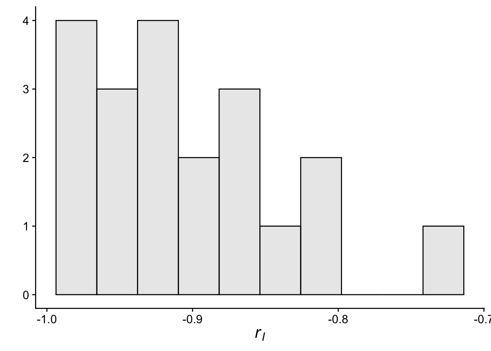
Z_I_Y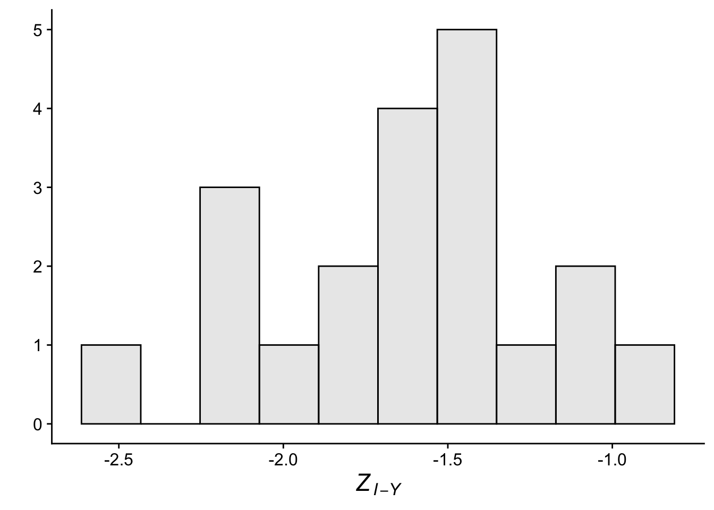
DHS - YLD
r_dhs_Y <- correlation_data %>%
ggplot(aes(r_dhs_yld))+
geom_histogram(bins = 10,
color = "black",
fill = "black",
alpha = 0.1)+
ylab("")+
xlab(substitute(paste(italic(r[DHS]))))+
theme_half_open()+
theme(axis.title.x = element_text(
colour = "black",
size = 17,
face = "bold.italic"))
Z_dhs_Y <- correlation_data %>%
ggplot(aes(z_dhs_yld))+
geom_histogram(bins = 10,
color = "black",
fill = "black",
alpha = 0.1)+
ylab("")+
xlab(substitute(paste(italic(Z[DHS - Y]))))+
theme_half_open()+
theme(axis.title.x = element_text(
colour = "black",
size = 17,
face = "bold.italic"))
r_dhs_Y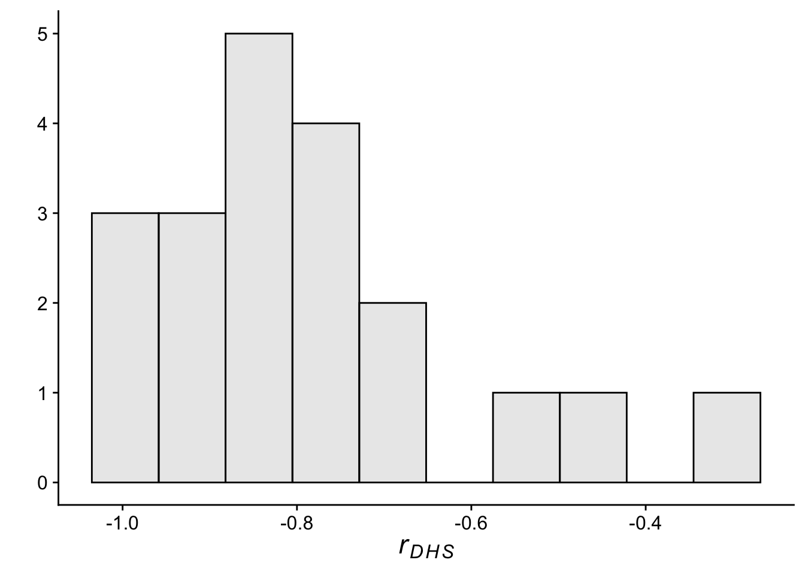
Z_dhs_Y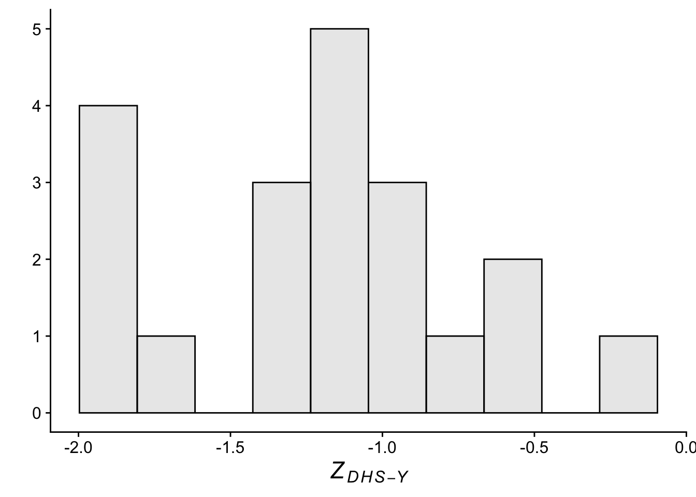
S - YLD
r_S_Y <- correlation_data %>%
ggplot(aes(r_idx_yld))+
geom_histogram(bins = 10,
color = "black",
fill = "black",
alpha = 0.1)+
ylab("")+
xlab(substitute(paste(italic(r[S]))))+
theme_half_open()+
theme(axis.title.x = element_text(
colour = "black",
size = 17,
face = "bold.italic"))
Z_S_Y <- correlation_data %>%
ggplot(aes(Z_idx_yld))+
geom_histogram(bins = 10,
color = "black",
fill = "black",
alpha = 0.1)+
ylab("")+
xlab(substitute(paste(italic(Z[S - Y]))))+
theme_half_open()+
theme(axis.title.x = element_text(
colour = "black",
size = 17,
face = "bold.italic"))
r_S_Y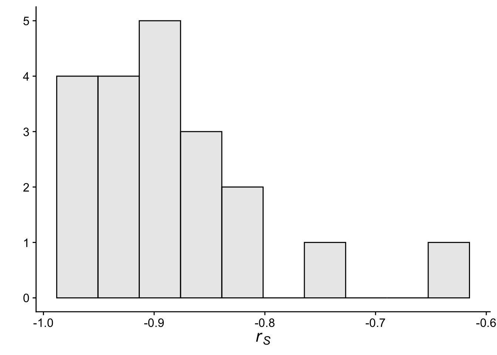
Z_S_Y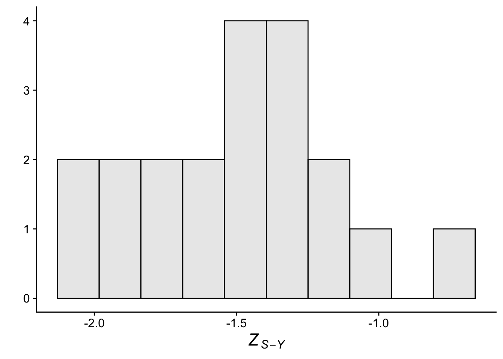
Patchwork
(r_I_Y | Z_I_Y) / (r_dhs_Y | Z_dhs_Y) / (r_S_Y | Z_S_Y)+
plot_annotation(tag_levels = "A")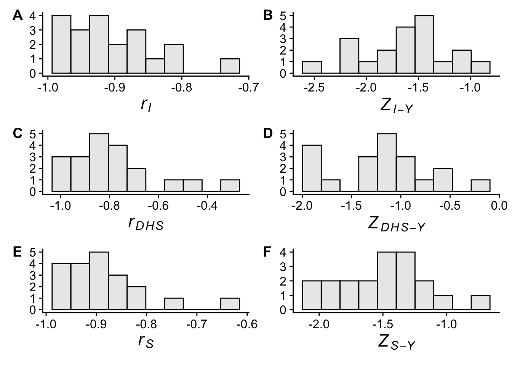
Multilevel models
In this section we are going to fit to the data, a multilevel model, to understand better the relationship between the disease intense and yield for the wheat blast disease. The two relationships that we are going to study are: a) Incidence - Yield relationship b) Severity - Yield relationship
Visualization
To visualize the distribution of the data of both relationship (I-Y and S-Y), we plot the data utilizing the package ggplot2
data_seve_yld_epamig %>%
ggplot(aes(seve_mean, yld_mean))+
geom_point()+
geom_smooth()`geom_smooth()` using method = 'loess' and formula 'y ~ x'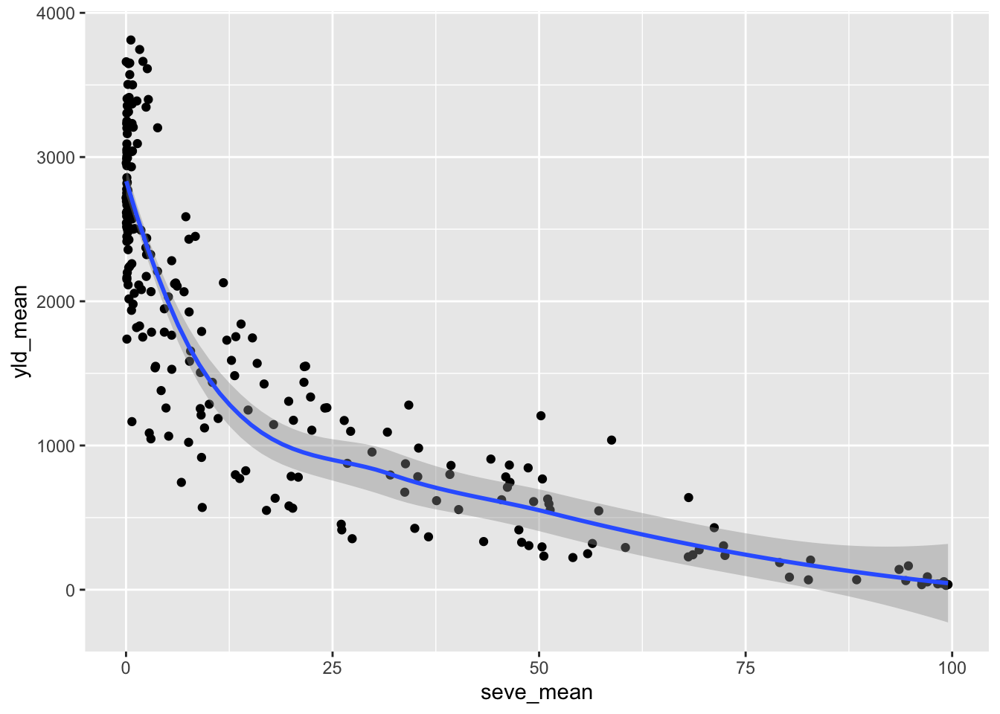
data_seve_yld_epamig %>%
ggplot(aes(seve_mean, log_yld))+
geom_point()+
geom_smooth()`geom_smooth()` using method = 'loess' and formula 'y ~ x'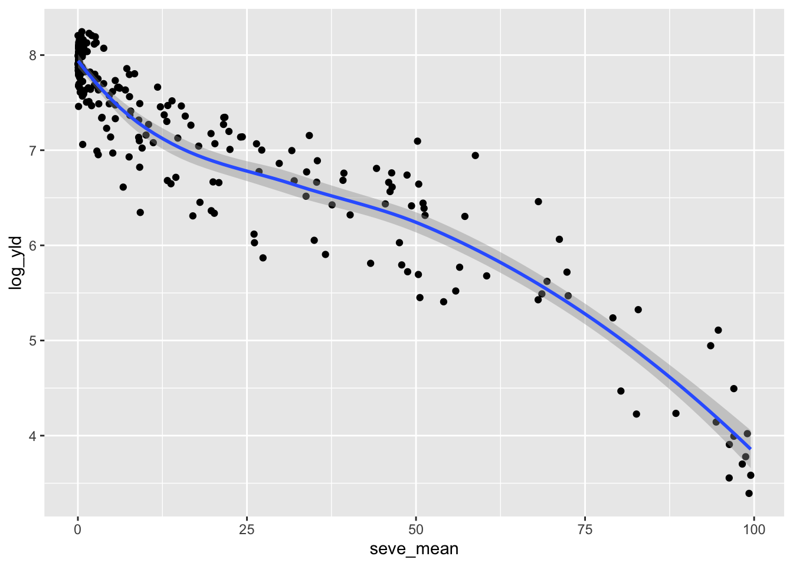
data_seve_yld_epamig %>%
ggplot(aes(inc_mean, yld_mean))+
geom_point()+
geom_smooth()`geom_smooth()` using method = 'loess' and formula 'y ~ x'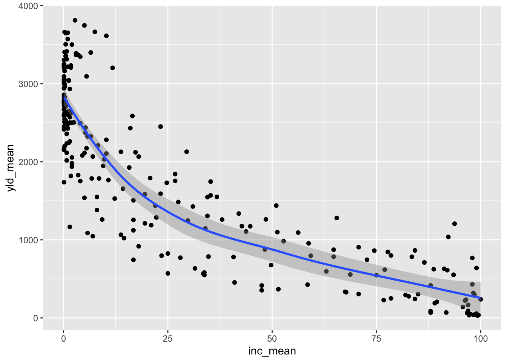
data_seve_yld_epamig %>%
ggplot(aes(inc_mean, log_yld))+
geom_point()+
geom_smooth()`geom_smooth()` using method = 'loess' and formula 'y ~ x'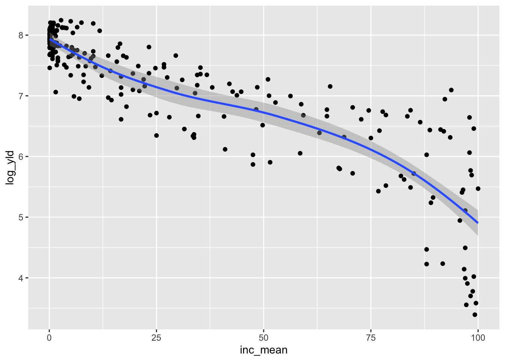
We will use the lmer function of the lme4 package to fit the multilevel model.
Different random coefficient model will be tested in this analysis. The random coefficient models tested will be:
Only intercept random; Only slope random; Both intercept and slope random.
Log transformation
With the objective of linearization of the relationship the variable yield, will be transformed to log of the yield (log(yld_mean)).
data_seve_yld_epamig <- data_seve_yld %>%
filter(data_source == "EPAMIG") %>%
mutate(log_yld = log(yld_mean))Fitting the models
S - Y relationship
m0 <- lmer(log_yld ~ 1 + (1 | study),
data = data_seve_yld_epamig, REML = FALSE)
# INTERCEPT AND SLOPES RANDOM
m1 <- lmer(log_yld ~ seve_mean + (seve_mean | study),
data = data_seve_yld_epamig,
REML = FALSE)Warning in checkConv(attr(opt, "derivs"), opt$par, ctrl = control$checkConv, :
Model failed to converge with max|grad| = 0.0064943 (tol = 0.002, component 1)# ONLY SLOPES ARE RANDOM
m2 <- lmer(log_yld ~ seve_mean + (1 | seve_mean),
data = data_seve_yld_epamig,
REML = FALSE)
# ONLY INTERCEPTS ARE RANDOM
m3 <- lmer(log_yld ~ seve_mean + (1 | study),
data = data_seve_yld_epamig,
REML = FALSE)
AIC(m0,m1,m2,m3) df AIC
m0 3 579.1918
m1 6 111.8122
m2 4 180.9404
m3 4 124.5042The best model according to the AIC value (the smallest one is the better) is the m1, the model with both intercept and slope random.
check_heteroscedasticity(m1)OK: Error variance appears to be homoscedastic (p = 0.274).summary(m1)Linear mixed model fit by maximum likelihood . t-tests use Satterthwaite's
method [lmerModLmerTest]
Formula: log_yld ~ seve_mean + (seve_mean | study)
Data: data_seve_yld_epamig
AIC BIC logLik deviance df.resid
111.8 132.7 -49.9 99.8 235
Scaled residuals:
Min 1Q Median 3Q Max
-3.0688 -0.4900 0.0097 0.4952 3.5435
Random effects:
Groups Name Variance Std.Dev. Corr
study (Intercept) 9.347e-02 0.305723
seve_mean 2.682e-05 0.005179 -0.18
Residual 6.377e-02 0.252521
Number of obs: 241, groups: study, 20
Fixed effects:
Estimate Std. Error df t value Pr(>|t|)
(Intercept) 7.721152 0.071961 18.316902 107.30 < 2e-16 ***
seve_mean -0.030091 0.001474 18.755634 -20.41 2.89e-14 ***
---
Signif. codes: 0 '***' 0.001 '**' 0.01 '*' 0.05 '.' 0.1 ' ' 1
Correlation of Fixed Effects:
(Intr)
seve_mean -0.248
optimizer (nloptwrap) convergence code: 0 (OK)
Model failed to converge with max|grad| = 0.0064943 (tol = 0.002, component 1)report(m1)We fitted a linear mixed model (estimated using ML and nloptwrap optimizer) to predict log_yld with seve_mean (formula: log_yld ~ seve_mean). The model included seve_mean and study as random effects (formula: ~seve_mean | study). The model's total explanatory power is substantial (conditional R2 = 0.93) and the part related to the fixed effects alone (marginal R2) is of 0.80. The model's intercept, corresponding to seve_mean = 0, is at 7.72 (95% CI [7.58, 7.86], t(235) = 107.30, p < .001). Within this model:
- The effect of seve mean is statistically significant and negative (beta = -0.03, 95% CI [-0.03, -0.03], t(235) = -20.41, p < .001; Std. beta = -0.77, 95% CI [-0.85, -0.70])
Standardized parameters were obtained by fitting the model on a standardized version of the dataset. 95% Confidence Intervals (CIs) and p-values were computed using I - Y relationship
m_I_0 <- lmer(log_yld ~ 1 + (1 | study),
data = data_seve_yld_epamig,
REML = FALSE)
# INTERCEPT AND SLOPES RANDOM
m_I_1 <- lmer(log_yld ~ inc_mean + (inc_mean | study),
data = data_seve_yld_epamig,
REML = FALSE)Warning in checkConv(attr(opt, "derivs"), opt$par, ctrl = control$checkConv, :
Model failed to converge with max|grad| = 0.00775823 (tol = 0.002, component 1)# ONLY SLOPES ARE RANDOM
m_I_2 <- lmer(log_yld ~ inc_mean + (1 | inc_mean),
data = data_seve_yld_epamig,
REML = FALSE)
# ONLY INTERCEPTS ARE RANDOM
m_I_3 <- lmer(log_yld ~ inc_mean + (1 | study),
data = data_seve_yld_epamig,
REML = FALSE)
AIC(m_I_0,m_I_1,m_I_2,m_I_3) df AIC
m_I_0 3 579.1918
m_I_1 6 147.2491
m_I_2 4 366.9745
m_I_3 4 213.7592The best model according to the AIC value (the smallest one is the better) is the m_I_1, the model with both intercept and slope random.
check_heteroscedasticity(m_I_1)OK: Error variance appears to be homoscedastic (p = 0.142).summary(m_I_1)Linear mixed model fit by maximum likelihood . t-tests use Satterthwaite's
method [lmerModLmerTest]
Formula: log_yld ~ inc_mean + (inc_mean | study)
Data: data_seve_yld_epamig
AIC BIC logLik deviance df.resid
147.2 168.2 -67.6 135.2 235
Scaled residuals:
Min 1Q Median 3Q Max
-2.6728 -0.4139 -0.0070 0.5166 3.2540
Random effects:
Groups Name Variance Std.Dev. Corr
study (Intercept) 4.434e-02 0.210578
inc_mean 2.976e-05 0.005455 0.80
Residual 7.670e-02 0.276941
Number of obs: 241, groups: study, 20
Fixed effects:
Estimate Std. Error df t value Pr(>|t|)
(Intercept) 7.798342 0.053311 16.147052 146.28 < 2e-16 ***
inc_mean -0.020315 0.001377 20.397684 -14.76 2.37e-12 ***
---
Signif. codes: 0 '***' 0.001 '**' 0.01 '*' 0.05 '.' 0.1 ' ' 1
Correlation of Fixed Effects:
(Intr)
inc_mean 0.485
optimizer (nloptwrap) convergence code: 0 (OK)
Model failed to converge with max|grad| = 0.00775823 (tol = 0.002, component 1)report(m_I_1)We fitted a linear mixed model (estimated using ML and nloptwrap optimizer) to predict log_yld with inc_mean (formula: log_yld ~ inc_mean). The model included inc_mean and study as random effects (formula: ~inc_mean | study). The model's total explanatory power is substantial (conditional R2 = 0.90) and the part related to the fixed effects alone (marginal R2) is of 0.68. The model's intercept, corresponding to inc_mean = 0, is at 7.80 (95% CI [7.69, 7.90], t(235) = 146.28, p < .001). Within this model:
- The effect of inc mean is statistically significant and negative (beta = -0.02, 95% CI [-0.02, -0.02], t(235) = -14.76, p < .001; Std. beta = -0.66, 95% CI [-0.75, -0.57])
Standardized parameters were obtained by fitting the model on a standardized version of the dataset. 95% Confidence Intervals (CIs) and p-values were computed using Moderator variable
Here we will test if the cultivar as en moderator variable in the best model of both relationships, to understand if the cultivar affect the relationship in some way.
Moderator_S <- lmer(log_yld ~ seve_mean*cultivar + (seve_mean | study),
data = data_seve_yld_epamig, REML = FALSE)Warning in checkConv(attr(opt, "derivs"), opt$par, ctrl = control$checkConv, :
Model failed to converge with max|grad| = 0.00230888 (tol = 0.002, component 1)Moderator_I <- lmer(log_yld ~ inc_mean*cultivar + (inc_mean | study),
data = data_seve_yld_epamig, REML = FALSE)boundary (singular) fit: see help('isSingular')Utilizing the function Anova from the package car we can observe if there is or there isn’t effect of the cultivar in the relationship
Anova(Moderator_S)Analysis of Deviance Table (Type II Wald chisquare tests)
Response: log_yld
Chisq Df Pr(>Chisq)
seve_mean 541.8967 1 <2e-16 ***
cultivar 4.3557 3 0.2255
seve_mean:cultivar 3.4656 3 0.3252
---
Signif. codes: 0 '***' 0.001 '**' 0.01 '*' 0.05 '.' 0.1 ' ' 1Anova(Moderator_I)Analysis of Deviance Table (Type II Wald chisquare tests)
Response: log_yld
Chisq Df Pr(>Chisq)
inc_mean 387.8363 1 < 2.2e-16 ***
cultivar 4.3202 3 0.228904
inc_mean:cultivar 15.5146 3 0.001426 **
---
Signif. codes: 0 '***' 0.001 '**' 0.01 '*' 0.05 '.' 0.1 ' ' 1For both models, of both relationships, the effect of the moderator variable was not significant.
BLUPs
Here we are going to extract the Best Linear Unbiased Prediction (BLUP) for both relationships
S - Y
blups_S_Y <- coefficients(m1)$study
names(blups_S_Y) <- c("log_intercept", "log_slope")
blups_S_Y <- blups_S_Y %>%
rownames_to_column(var = "IDs")
summary(blups_S_Y) IDs log_intercept log_slope
Length:20 Min. :7.032 Min. :-0.03784
Class :character 1st Qu.:7.604 1st Qu.:-0.03234
Mode :character Median :7.822 Median :-0.02990
Mean :7.721 Mean :-0.03009
3rd Qu.:7.911 3rd Qu.:-0.02710
Max. :8.109 Max. :-0.02268 I - Y
blups_I_Y <- coefficients(m_I_1)$study
names(blups_I_Y) <- c("log_intercept", "log_slope")
blups_I_Y <- blups_I_Y %>%
rownames_to_column(var = "IDs")
summary(blups_I_Y) IDs log_intercept log_slope
Length:20 Min. :7.391 Min. :-0.03316
Class :character 1st Qu.:7.717 1st Qu.:-0.02238
Mode :character Median :7.861 Median :-0.01843
Mean :7.798 Mean :-0.02031
3rd Qu.:7.920 3rd Qu.:-0.01702
Max. :8.088 Max. :-0.01392 Extraction of coefficients
S - Y
b0_m1 <- fixef(m1)[1]
b1_m1 <- fixef(m1)[2]I - Y
b0_m_I_1 <- fixef(m_I_1)[1]
b1_m_I_1 <- fixef(m_I_1)[2]Confidence interval
In this section we will extract the confidence intervals of each model.
S - Y
ci_m1 <- Confint(m1)
b0_ci_m1_L <- ci_m1[1,2]
b0_ci_m1_h <- ci_m1[1,3]
b1_ci_m1_L <- ci_m1[2,2]
b1_ci_m1_h <- ci_m1[2,3]I - Y
ci_m_I_1 <- Confint(m_I_1)
b0_ci_m_I_1_L <- ci_m_I_1[1,2]
b0_ci_m_I_1_h <- ci_m_I_1[1,3]
b1_ci_m_I_1_L <- ci_m_I_1[2,2]
b1_ci_m_I_1_h <- ci_m_I_1[2,3]Back-transformation
In this section we will build functions to predict the yield at the original scale (kg/ha) for any value of Incidence or Severity that we want. For the function work will be necessary to inform some parameter, the parameters are:
a = is the intercept (b0) extracted from the model at log scale b = is the slope (b1) extracted from the model at log scale D = is the value of disease intense (incidence or severity) that we desire (0-100%).
It is important to note that, if you want to predict values of yield in a specific value of Incidence, for example, you must use the parameters (b0 and b1) extracted from the model of the I-Y relationship. The same occurs for predictions based on the severity value.
BK_Y = function(a, b, D){
X = ((exp(a))*exp(b*D))
return(X)
}here goes one example for the use of our function, in this example we want to predict the yield at 10%, 35% and 65% of severity
severity = c(10, 35, 65)
BK_Y(a = b0_m1, b = b1_m1, D = severity)[1] 1669.4368 786.7931 319.0136DY/DD
Due to both of our relationship present a non-linear pattern at the original scale the absolute rate of decline in yield was not constant but declined with the increase of I or S values.
To observe such variable rate of decline, another function will be create. The parameters utilized in this function are the same used to predict the yield, being them:
a = is the intercept (b0) extracted from the model at log scale b = is the slope (b1) extracted from the model at log scale D = is the value of disease intense (incidence or severity) that we desire (0-100%).
Again, is important to highlight that if you want to predict the absolute rate of decline for values of Incidence, for example, you must use the parameters (b0 and b1) extracted from the model of the I-Y relationship. The same occurs for predictions based on the severity value.
DY_DD = function(a,b,D){
dyds = b*exp(a)*exp(b*D)
return(dyds)
}Here is one example for the use of our function, in this example we want to predict absolute rate of decline for values of severity from 10% to 100% in increments of 10%.
seve = c(10,20,30,40,50,60,70,80,90,100)
DY_DD(a = b0_m1, b = b1_m1, D = seve) [1] -50.235110 -37.181215 -27.519453 -20.368358 -15.075518 -11.158054
[7] -8.258567 -6.112528 -4.524151 -3.348523Graphs
First we will go to create some graphics to visualize the distribution of our data, for all graphics we will use the ggplot2 package.
Data distribution
Incidence
hist01 <- data_seve_yld_epamig %>%
ggplot(aes(inc_mean))+
geom_histogram(color = "white",
fill = "#a40000",
alpha = 0.9,
bins = 20)+
geom_vline(xintercept = 29.92104,
size = 1.2,
linetype = 2)+
theme_half_open()+
theme(plot.title = element_text(size = 12))+
labs(x = "Incidence (%)", y = "Frequency")DHS
hist02 <- data_seve_yld_epamig %>%
ggplot(aes(dhs_mean))+
geom_histogram(color = "white",
fill = "#16317d",
alpha = 0.9,
bins = 20)+
geom_vline(xintercept = 43.1174,
size = 1.2,
linetype = 2)+
theme_half_open()+
theme(plot.title = element_text(size = 12))+
labs(x = "DHS (%)", y = "Frequency")Severity
hist03 <- data_seve_yld_epamig %>%
ggplot(aes(seve_mean))+
geom_histogram(color = "white",
fill = "#007e2f",
alpha = 0.9,
bins = 20)+
geom_vline(xintercept = 19.98592,
size = 1.2,
linetype = 2)+
theme_half_open()+
theme(plot.title = element_text(size = 12))+
labs(x = "Severity (%)", y = "Frequency")Yield
hist04 <- data_seve_yld_epamig %>%
ggplot(aes(yld_mean))+
geom_histogram(color = "white",
fill = "#721b3e",
alpha = 0.9,
bins = 20)+
geom_vline(xintercept = 1748.698,
size = 1.2,
linetype = 2)+
theme_half_open()+
theme(plot.title = element_text(size = 12))+
labs(x = "Yield (kg/ha)", y = "Frequency")Patchwork
(hist01 + hist02) / (hist03 + hist04)+
plot_annotation(tag_levels = 'A')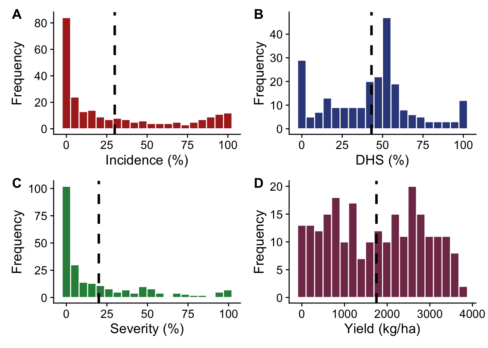
S - Y relationship
Data distribution
PS1 <- data_seve_yld_epamig %>%
ggplot(aes(seve_mean, log_yld))+
geom_point(size = 1.5,
color = "#007e2f",
alpha = 0.5)+
geom_smooth(se = FALSE,
method = "lm",
color = "#007e2f")+
theme_half_open()+
labs(y = "Log Yield", x = "Severity (%)")Blups
PS2 <- data_seve_yld_epamig %>%
ggplot(aes(seve_mean, log_yld))+
geom_point(color = NA)+
geom_abline(data = blups_S_Y, aes(intercept = log_intercept, slope = log_slope, group = IDs),
size = 0.8,
color = "#007e2f")+
theme_half_open()+
xlab("Severity (%)")+
ylab("Log Yield")Model prediction
PS3 <- data_seve_yld_epamig %>%
ggplot(aes(seve_mean, log_yld))+
geom_point(color = NA)+
geom_abline(intercept = b0_m1, slope = b1_m1,
size = 1.5,
color = "#007e2f")+
geom_abline(intercept = b0_ci_m1_L, slope = b1_ci_m1_L,
size = 1.2,
linetype = 2,
color = "#007e2f")+
geom_abline(intercept = b0_ci_m1_h, slope = b1_ci_m1_h,
size = 1.2,
linetype = 2,
color = "#007e2f")+
theme_half_open()+
labs(x = "Severity (%)", y = "Log Yield")Y back-transformed
SEV <- seq(0,100)
fit_bk_yld <- BK_Y(a = b0_m1, b = b1_m1, D = SEV)
fit_bk_ciL <- BK_Y(a = b0_ci_m1_L, b = b1_ci_m1_L, D = SEV)
fit_bk_cih <- BK_Y(a = b0_ci_m1_h, b = b1_ci_m1_h, D = SEV)
predi_yld <- data.frame(SEV,fit_bk_yld,fit_bk_ciL, fit_bk_cih)PS4 <- data_seve_yld_epamig %>%
ggplot(aes(seve_mean, yld_mean))+
geom_point(color = "#007e2f",
alpha = 0.3,
size = 1.5)+
geom_line(data = predi_yld, aes(SEV, fit_bk_yld),
size = 1.5,
color = "#007e2f")+
geom_line(data = predi_yld, aes(SEV, fit_bk_ciL),
size = 1.2,
color = "#007e2f",
linetype = 2)+
geom_line(data = predi_yld, aes(SEV, fit_bk_cih),
size = 1.2,
color = "#007e2f",
linetype = 2)+
theme_half_open()+
ylim(0,3000)+
labs(x = "Severity (%)", y = "Yield (kg/ha)")Patchwork S - Y
(PS1 + PS2) / (PS3 + PS4)+
plot_annotation(tag_levels = 'A')`geom_smooth()` using formula 'y ~ x'Warning: Removed 241 rows containing missing values (geom_point).
Removed 241 rows containing missing values (geom_point).Warning: Removed 38 rows containing missing values (geom_point).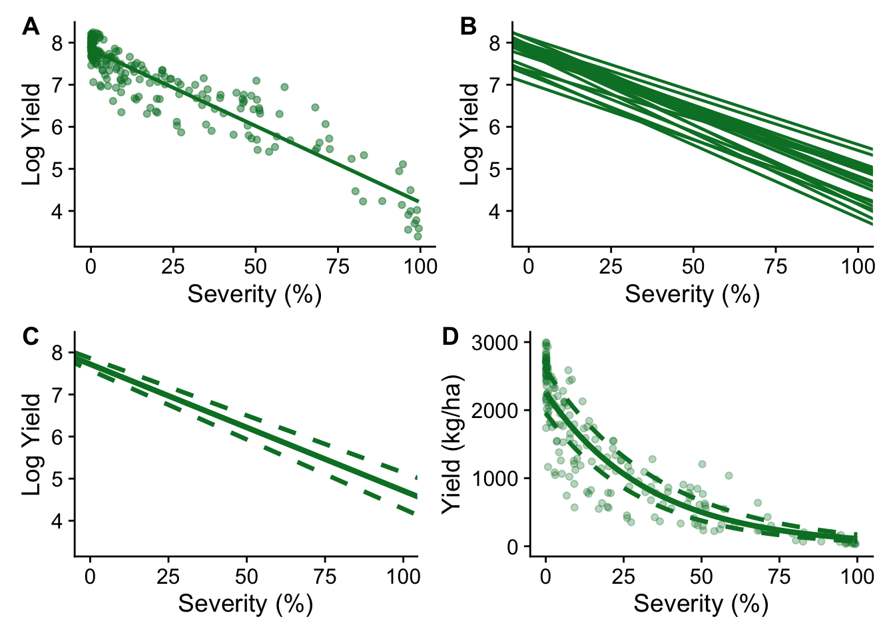
DYDS
pred_dyds <- DY_DD(a = b0_m1, b = b1_m1, D = SEV)
pred_dyds_L <- DY_DD(a = b0_ci_m1_L, b = b1_ci_m1_L, D = SEV)
pred_dyds_H <- DY_DD(a = b0_ci_m1_h, b = b1_ci_m1_h, D = SEV)
DYDS <- data.frame(SEV, pred_dyds, pred_dyds_L, pred_dyds_H)DYDS %>%
ggplot(aes(SEV, pred_dyds))+
geom_point(color = NA)+
geom_line(data = DYDS, aes(SEV, pred_dyds),
size = 1.5,
color = "#007e2f")+
geom_line(data = DYDS, aes(SEV, pred_dyds_L),
size = 1.2,
color = "#007e2f",
linetype = 2)+
geom_line(data = DYDS, aes(SEV, pred_dyds_H),
size = 1.2,
color = "#007e2f",
linetype = 2)+
theme_half_open()+
ylim(-70, 0)+
labs(x = "Severity (%)", y = "Absolute rate of reduction (kg/ha)")Warning: Removed 101 rows containing missing values (geom_point).Warning: Removed 1 row(s) containing missing values (geom_path).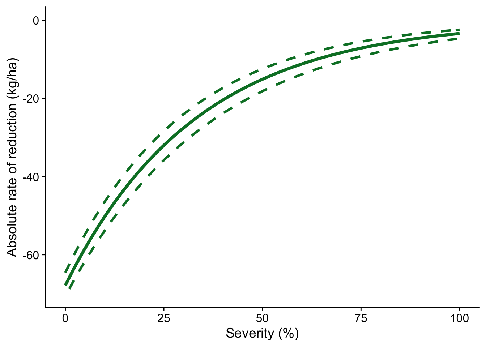
I - Y relationship
Data distribution
PI1 <- data_seve_yld_epamig %>%
ggplot(aes(inc_mean, log_yld))+
geom_point(size = 1.5,
color = "#a40000",
alpha = 0.5)+
geom_smooth(se = FALSE,
method = "lm",
color = "#a40000")+
theme_half_open()+
labs(y = "Log Yield", x = "Incidence (%)")Blups
PI2 <- data_seve_yld_epamig %>%
ggplot(aes(inc_mean, log_yld))+
geom_point(color = NA)+
geom_abline(data = blups_I_Y, aes(intercept = log_intercept, slope = log_slope, group = IDs),
size = 0.8,
color = "#a40000")+
theme_half_open()+
xlab("Incidence (%)")+
ylab("Log Yield")Model prediction
PI3 <- data_seve_yld_epamig %>%
ggplot(aes(inc_mean, log_yld))+
geom_point(color = NA)+
geom_abline(intercept = b0_m_I_1, slope = b1_m_I_1,
size = 1.5,
color = "#a40000")+
geom_abline(intercept = b0_ci_m_I_1_L, slope = b1_ci_m_I_1_L,
size = 1.2,
linetype = 2,
color = "#a40000")+
geom_abline(intercept = b0_ci_m_I_1_h, slope = b1_ci_m_I_1_h,
size = 1.2,
linetype = 2,
color = "#a40000")+
theme_half_open()+
labs(x = "Incidence (%)", y = "Log Yield")Y back-transformed
SEV <- seq(0,100)
fit_bk_I_yld <- BK_Y(a = b0_m_I_1, b = b1_m_I_1, D = SEV)
fit_bk_I_ciL <- BK_Y(a = b0_ci_m_I_1_L, b = b1_ci_m_I_1_L, D = SEV)
fit_bk_I_cih <- BK_Y(a = b0_ci_m_I_1_h, b = b1_ci_m_I_1_h, D = SEV)
predi_I_yld <- data.frame(SEV,fit_bk_I_yld,fit_bk_I_ciL, fit_bk_I_cih)PI4 <- data_seve_yld_epamig %>%
ggplot(aes(inc_mean, yld_mean))+
geom_point(color = "#a40000",
alpha = 0.3,
size = 1.5)+
geom_line(data = predi_I_yld, aes(SEV, fit_bk_I_yld),
size = 1.5,
color = "#a40000")+
geom_line(data = predi_I_yld, aes(SEV, fit_bk_I_ciL),
size = 1.2,
color = "#a40000",
linetype = 2)+
geom_line(data = predi_I_yld, aes(SEV, fit_bk_I_cih),
size = 1.2,
color = "#a40000",
linetype = 2)+
theme_half_open()+
ylim(0,3000)+
labs(x = "Incidence (%)", y = "Yield (kg/ha)")Patchwork I - Y
(PI1 + PI2) / (PI3 + PI4)+
plot_annotation(tag_levels = 'A')`geom_smooth()` using formula 'y ~ x'Warning: Removed 241 rows containing missing values (geom_point).
Removed 241 rows containing missing values (geom_point).Warning: Removed 38 rows containing missing values (geom_point).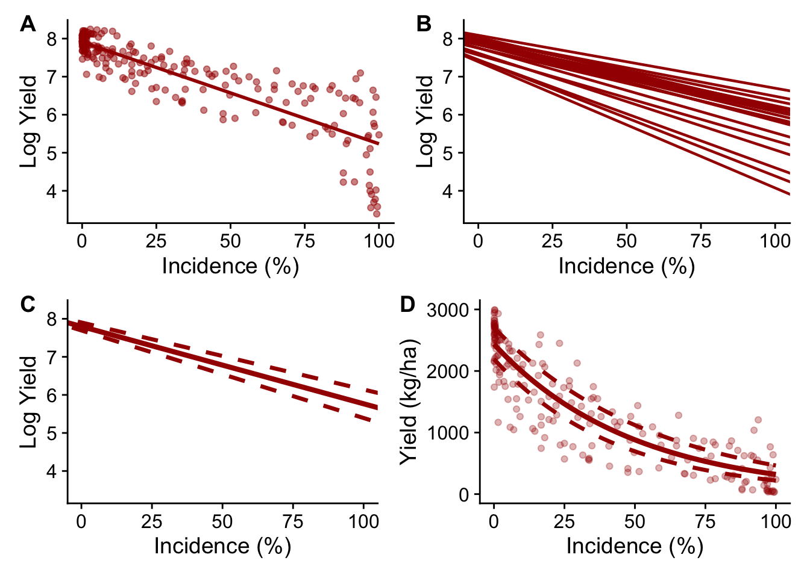
DYDI
pred_dydi <- DY_DD(a = b0_m_I_1, b = b1_m_I_1, D = SEV)
pred_dydi_L <- DY_DD(a = b0_ci_m_I_1_L, b = b1_ci_m_I_1_L, D = SEV)
pred_dydi_H <- DY_DD(a = b0_ci_m_I_1_h, b = b1_ci_m_I_1_h, D = SEV)
DYDI <- data.frame(SEV, pred_dydi, pred_dydi_L, pred_dydi_H)DYDI %>%
ggplot(aes(SEV, pred_dyds))+
geom_point(color = NA)+
geom_line(data = DYDI, aes(SEV, pred_dydi),
size = 1.5,
color = "#a40000")+
geom_line(data = DYDI, aes(SEV, pred_dydi_L),
size = 1.2,
color = "#a40000",
linetype = 2)+
geom_line(data = DYDI, aes(SEV, pred_dydi_H),
size = 1.2,
color = "#a40000",
linetype = 2)+
theme_half_open()+
ylim(-70, 0)+
labs(x = "Incidence (%)", y = "Absolute rate of reduction (kg/ha)")Warning: Removed 101 rows containing missing values (geom_point).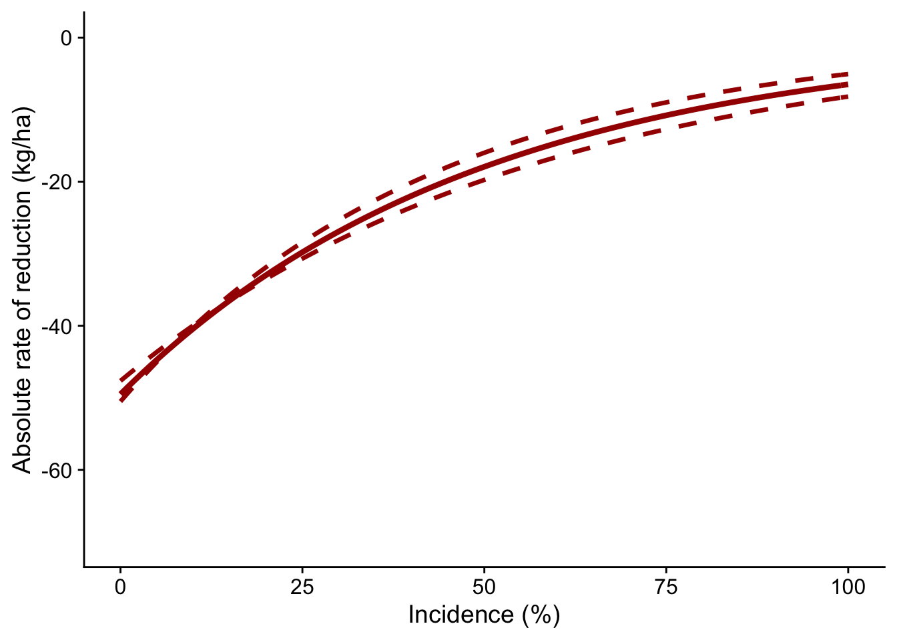
Suplemntary graphics
S - Y
there is the necessity of preparing the data for the graphics
data_seve_yld_epamig <- data_seve_yld_epamig %>%
dplyr::mutate(study2 = case_when(study == 46 ~ 1,
study == 47 ~ 2,
study == 48 ~ 3,
study == 49 ~ 4,
study == 50 ~ 5,
study == 51 ~ 6,
study == 52 ~ 7,
study == 53 ~ 8,
study == 54 ~ 9,
study == 55 ~ 10,
study == 56 ~ 11,
study == 57 ~ 12,
study == 58 ~ 13,
study == 59 ~ 14,
study == 60 ~ 15,
study == 61 ~ 16,
study == 62 ~ 17,
study == 63 ~ 18,
study == 64 ~ 19,
study == 65 ~ 20))
nomes <- c("1" = "1 - MGS Brilhante", "2" = "2 - BRS 264","3" ="3 - MGS Brilhante", "4" ="4 - BRS 264","5" = "5 - BRS 404", "6" ="6 - MGS Brilhante", "7" ="7 - BRS 264", "8" ="8 - BRS 404", "9" ="9 - MGS Brilhante", "10" ="10 - BRS 264","11" ="11 - BRS 404","12" = "12 - MGS Brilhante","13" = "13 - BRS 264", "14" ="14 - BRS 404","15" = "15 - MGS Brilhante","16" ="16 - BRS 264","17" = "17 - BRS 404","18" = "18 - BRS 264", "19" ="19 - BRS 404","20" = "20 - MGS Brilhante")Log
data_seve_yld_epamig %>%
ggplot(aes(seve_mean, log_yld))+
geom_point(alpha = 0.5,
size = 2,
color = "#007e2f")+
geom_smooth(se = FALSE,
color = "#007e2f",
method = "lm",
size = 0.8)+
facet_wrap(~ study2, ncol = 4,
labeller = labeller(study2 = nomes))+
theme_half_open()+
theme(strip.background = element_rect(color = "black", fill = "white"))+
labs(x = "Severity (%)", y = "log Yield")`geom_smooth()` using formula 'y ~ x'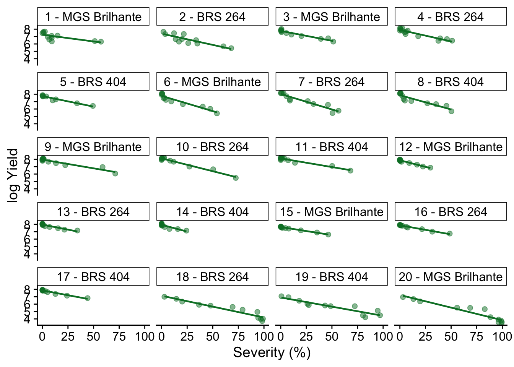
Back-transformed
data_seve_yld_epamig %>%
ggplot(aes(seve_mean, yld_mean))+
geom_point(alpha = 0.5,
size = 2,
color = "#007e2f")+
geom_smooth(se = FALSE,
color = "#007e2f",
span = 1.5,
size = 0.8)+
facet_wrap(~ study2, ncol = 4,
labeller = labeller(study2 = nomes))+
theme_half_open()+
theme(strip.background = element_rect(color = "black", fill = "white"))+
labs(x = "Severity (%)", y = "Yield (kg/ha)")`geom_smooth()` using method = 'loess' and formula 'y ~ x'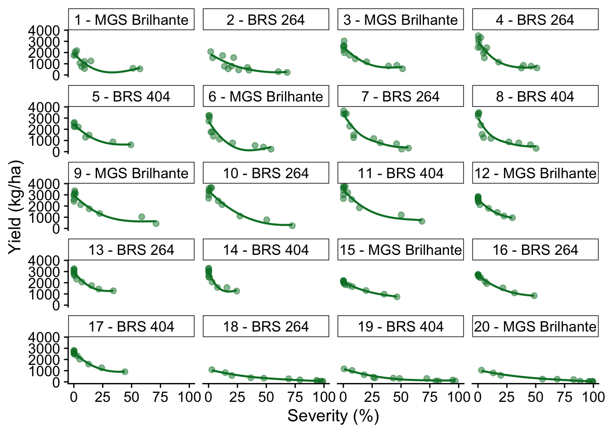
I - Y
Log
data_seve_yld_epamig %>%
ggplot(aes(inc_mean, log_yld))+
geom_point(alpha = 0.5,
size = 2,
color = "#a40000")+
geom_smooth(se = FALSE,
color = "#a40000",
method = "lm",
size = 0.8)+
facet_wrap(~ study2, ncol = 4,
labeller = labeller(study2 = nomes))+
theme_half_open()+
theme(strip.background = element_rect(color = "black", fill = "white"))+
labs(x = "Incidence (%)", y = "log Yield")`geom_smooth()` using formula 'y ~ x'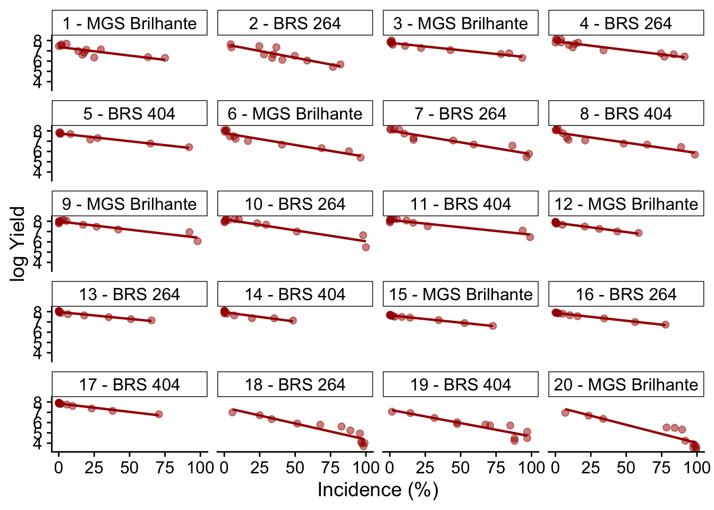
Back-transformed
data_seve_yld_epamig %>%
ggplot(aes(inc_mean, yld_mean))+
geom_point(alpha = 0.5,
size = 2,
color = "#a40000")+
geom_smooth(se = FALSE,
color = "#a40000",
span = 1.2,
size = 0.8)+
facet_wrap(~ study2, ncol = 4,
labeller = labeller(study2 = nomes))+
theme_half_open()+
theme(strip.background = element_rect(color = "black", fill = "white"))+
labs(x = "Incidence (%)", y = "Yield (kg/ha)")`geom_smooth()` using method = 'loess' and formula 'y ~ x'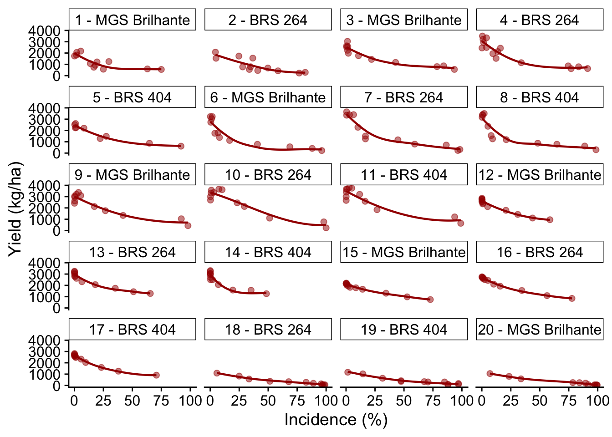